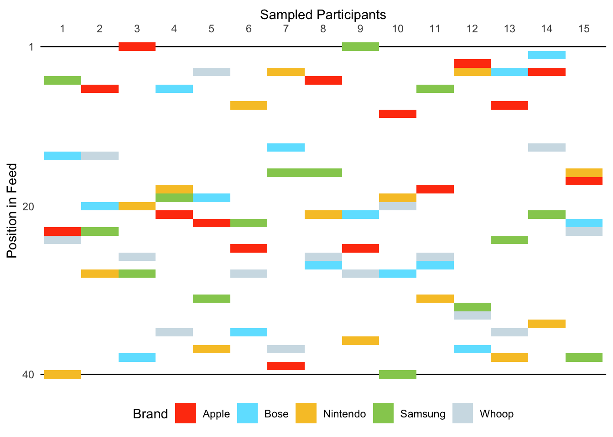

1 Case Studies
1.1 Case Study 1: When Do Users Remember Ads? Dwell Time Outperforms Position in Explaining Recall
While investigating which content cuts through the clutter (Ordenes et al. 2019), we focus on the content’s position rather than examining a sponsored post’s characteristics (see, e.g., Berger, Moe, and Schweidel 2023 who study the content’s linguistic features). Specifically, we examine whether a sponsored post’s position in a social media feed affects its recall, building on research about recency and primacy effects (see, e.g., Wedel and Pieters 2000; Murphy, Hofacker, and Mizerski 2006; Agarwal, Hosanagar, and Smith 2011). A naïve model reveals a primacy effect, where sponsored posts in higher positions show increased likelihood of recall. However, this effect disappears when controlling for dwell time. Furthermore, our analysis demonstrates that longer dwell times correlate with higher recall probability for sponsored posts.
Using position effects in social media advertising as an illustrative example, the primary goal of this case study is to demonstrate practical applications of the DICE app’s dwell time measurement. By showing how to create a feed and then link post-specific dwell times with self-reported recall measures, we provide a practical template for researchers who intend to combine DICE’s behavioral measures with survey data elicited in tools such as Qualtrics.
1.1.1 Experimental Design
To investigate the relationship between ad placement and recall, we simulated social media feeds containing both organic and sponsored posts. Whereas the set of organic and sponsored posts was the same for all participants, the sequence in which the participants were exposed to these posts was unique for every participant as we randomized the sequence between subjects.
Aiming to create ecologically valid stimuli, we populated our experimental feed with thrity-five memes (organic posts) and five consumer electronics advertisements (sponsored posts). Accordingly, we collected memes from 9gag, a popular account with more than sixteen million followers on X (formerly called “Twitter”) that is well known for its internet meme collections. The choice of memes as organic content was deliberate, given their dominant role in social media engagement, particularly among younger users: Malodia et al. (2022) report that 75% of social media users aged 13 to 36 regularly share memes, and 30% of these users share memes daily, with Instagram users sharing over 1 million meme-related posts per day in 2020 (Instagram 2020). This prevalence of meme consumption among younger demographics informed both our recruiting strategy and our selection of sponsored content: we recruited 300 young American participants (\(M_{age}\)=29.42 years; 53% female) from Prolific and selected consumer electronics advertisements from established brands (i.e., Apple, Bose, Nintendo, Samsung, Whoop) retrieved from Facebook’s Ad Library–a publicly accessible database that archives advertisements running across Meta’s platforms. The selected sponsored posts showed natural variation in their characteristics, reflecting the diversity of ads users encounter in their daily social media use. This approach aligns with recent methodological work on stimulus sampling (Simonsohn, Montealegre, and Evangelidis 2024) which demonstrates that in studies focused on a single manipulated variable (a sponsored post’s position in our case), using diverse stimuli helps ensure effects are not driven by idiosyncratic characteristics of any particular advertisement, increasing both internal and ecological validity.
Figure 1.1 provides a visual representation of our experimental design, specifically illustrating the randomization of sponsored post positions across participants. The figure plots the position in feed against 15 randomly sampled participants, with different colors representing the five brands. Figure 1.1 demonstrates how the sponsored posts’ positions were randomly distributed throughout the feed, ensuring that each participant encountered the five advertisements in a unique sequence with no systematic patterns in the placement of any particular brand’s advertisements.

1.1.2 Procedure
Participants browsed the simulated feed on their own devices (72% Desktop, 25% Mobile, and 3% Tablet), allowing for unobtrusive measurement of dwell time for each post. After scrolling through the feed, we redirected participants to a Qualtrics survey in which they first provided demographic information as a filler task. Subsequently, we measured whether participants recalled seeing the ads by the five brands in the feed. Specifically, we measured cued recall for which we showed participants a list of twenty brands from different categories and asked them to indicate whether they recalled seeing them (see, e.g., Campbell and Keller 2003; Simonov, Valletti, and Veiga 2024). We also included a no-recall option. Finally, participants read a debriefing and were redirected to Prolific.
1.1.3 Stimuli
We next illustrate how we configured the feed to match our experimental design. Specifically, we created a CSV file that contains forty rows where each row represents one unique post. To guarantee that the order in which the posts were displayed was randomized between participants, we left the <sequence> column empty. Whenever the DICE app encounters missing values in that column, it assigns random numbers to that cell. Hence, leaving some, or in our case, all cells of this column empty, leads to random numbers and thus, random sequences in which the posts are displayed. Next, we specified the Boolean <sponsored> column and assigned a 0 to all thirty-five organic posts and a 1 to the five sponsored posts. For these sponsored posts, we also specified a <target> which is the URL of landing page participants are directed to if they click on the corresponding sponsored post. As a final step, we uploaded the CSV file to an online repository to create a URL that can be passed to DICE’s web app.
Table 1.1 shows an excerpt of the exact CSV files we used to create the stimuli for this study. You can download that file here.
| doc_id | datetime | text | media | alt_text | likes | reposts | replies | username | handle | user_description | user_image | user_followers | commented_post | sponsored | target | condition | sequence | source |
|---|---|---|---|---|---|---|---|---|---|---|---|---|---|---|---|---|---|---|
| 34 | 20.09.24 12:01 | Dental receptionist when you don’t know if you’ll be free at 2:30pm next February | https://pbs.twimg.com/media/GX3wITOX0AAEyhO?format=jpg&name=4096x4096 | NA | 247 | 21 | 15 | 9GAG ❤️ Memeland | 9GAG | Building MEMELAND one meme at a time • 📧 9gag9gag.com • CEO ➡️ 9gagceo. | https://pbs.twimg.com/profile_images/1695636573294125056/Jj9IWW10_400x400.jpg | 16812312 | 0 | 0 | NA | A | NA | https://twitter.com/9GAG/status/1836888251941998992 |
| 35 | 19.09.24 06:01 | Me: sends “Good morning” text Also me: sleeps again | https://pbs.twimg.com/media/GXz48AYXMAA4-Wm?format=jpg&name=medium | NA | 475 | 118 | 19 | 9GAG ❤️ Memeland | 9GAG | Building MEMELAND one meme at a time • 📧 9gag9gag.com • CEO ➡️ 9gagceo. | https://pbs.twimg.com/profile_images/1695636573294125056/Jj9IWW10_400x400.jpg | 16812312 | 0 | 0 | NA | A | NA | https://twitter.com/9GAG/status/1836616460271030578 |
| 36 | 09.10.24 01:00 | Trade in. Upgrade. Save. It’s a win-win-win. | https://scontent-ham3-1.xx.fbcdn.net/v/t39.35426-6/462218991_2262824920752352_7170739144707876726_n.jpg?stp=dst-jpg_s600x600&_nc_cat=105&ccb=1-7&_nc_sid=c53f8f&_nc_ohc=8iy6cVBWpdsQ7kNvgG2iyBj&_nc_ht=scontent-ham3-1.xx&_nc_gid=Au5_Py3fxlUQdue1avtqNle&oh=00_AYAy5jqXGlkDzj6L1-hJD-AJ_RXQKg_afDs2aZ1kBcV–g&oe=670E8B8A | NA | 396 | 78 | 19 | Apple | Apple | Apple.com | https://substackcdn.com/image/fetch/f_auto,q_auto:good,fl_progressive:steep/https%3A%2F%2Fsubstack-post-media.s3.amazonaws.com%2Fpublic%2Fimages%2F8ed3d547-94ff-48e1-9f20-8c14a7030a02_2000x2000.jpeg | 9712532 | 0 | 1 | https://www.apple.com/shop/buy-mac/macbook-pro/16-inch?cid=wwa-us-soc-mac-macdt-socl-rbwfm-staf-infe-cpc-mos-mobtab-amact-gnt-broa-bnlp-lfnnl-usen-sngl-static-11ar-ban-macpro-trdn-rnge-buy-na-na-na-04807071 | A | NA | https://www.facebook.com/ads/library/?active_status=active&ad_type=all&country=DE&id=513634761464978&media_type=all&search_type=page&view_all_page_id=434174436675167 |
| 37 | 10.10.24 01:00 | Track your sleep, strain, stress, recovery, and more – on a high-powered device you’ll forget you’re even wearing. | https://scontent-ham3-1.xx.fbcdn.net/v/t39.35426-6/456453687_1497228568338575_3460451067821947560_n.jpg?stp=dst-jpg_s600x600&_nc_cat=108&ccb=1-7&_nc_sid=c53f8f&_nc_ohc=s0zq2rnJIbYQ7kNvgEA5dEc&_nc_ht=scontent-ham3-1.xx&_nc_gid=Ar8I66iuX4byWiPP-Wa2iZK&oh=00_AYAcfU0N2dPWf9iX1J78Z0qw-uFC0KjQS7_Si_G21NRDmg&oe=670EA829 | NA | 203 | 16 | 41 | WHOOP | WHOOP | Your wearable health & fitness coach on a mission to unlock human performance. Join now and shop our latest styles 👇 | https://cdn-1.webcatalog.io/catalog/whoop/whoop-icon-filled-256.png?v=1727793667542 | 98445 | 0 | 1 | https://www.whoop.com/ | A | NA | https://www.facebook.com/ads/library/?active_status=active&ad_type=all&country=DE&id=884008727118967&media_type=all&search_type=page&view_all_page_id=314298918730028 |
| 38 | 11.10.24 01:00 | Get powerful AI tools in a pocket-friendly package. Get the the all new Galaxy Z Flip6 and save up to $650 with trade-in. | https://scontent-ham3-1.xx.fbcdn.net/v/t39.35426-6/461785311_849420040637530_4189807201330104983_n.jpg?stp=dst-jpg_s600x600&_nc_cat=109&ccb=1-7&_nc_sid=c53f8f&_nc_ohc=_zSkXBev5O8Q7kNvgGd-3-L&_nc_ht=scontent-ham3-1.xx&_nc_gid=A6T__p18PiafwzhxKZvMoiE&oh=00_AYCfhZS2xVPfuYEfNUttcHbnivX2017oazxDp4SLd_bEng&oe=670E9DD7 | NA | 44 | 5 | 5 | Samsung US | SamsungUS | Official Twitter of Samsung USA. | https://i.pinimg.com/originals/74/79/a0/7479a0a02cf333e01e13d1b6d08af800.jpg | 75937 | 0 | 1 | https://www.samsung.com/us/smartphones/galaxy-z-flip6/buy/galaxy-z-flip6-512gb-unlocked-sm-f741uakexaa/ | A | NA | https://www.facebook.com/ads/library/?active_status=active&ad_type=all&country=DE&id=800744292023909&media_type=all&search_type=page&view_all_page_id=7224956785 |
| 39 | 12.10.24 01:00 | Bring home the Nintendo Switch™ system and get everyone in on the fun together! | https://scontent-ham3-1.xx.fbcdn.net/v/t39.35426-6/461833323_1598276837567833_385467090264512800_n.jpg?stp=dst-jpg_s600x600&_nc_cat=108&ccb=1-7&_nc_sid=c53f8f&_nc_ohc=Yld5Mu9Ls54Q7kNvgGlM207&_nc_ht=scontent-ham3-1.xx&_nc_gid=AGzr0CP_zIG-20aQne5-Az6&oh=00_AYDry9MlNds6mS_mzOBiFatTpHy9qdqDPTMda84KJy3Gjw&oe=670E8CA6 | NA | 9339 | 1903 | 240 | Nintendo of America | NintendoAmerica | Welcome to the official Nintendo profile for gaming news! We’re listening, too. For ESRB ratings go to http://esrb.org | https://pbs.twimg.com/profile_images/1539293929031421958/cy-uzR2t_400x400.jpg | 13948183 | 0 | 1 | https://www.nintendo.com/us/store/products/nintendo-switch-lite-gray/ | A | NA | https://www.facebook.com/ads/library/?active_status=active&ad_type=all&country=DE&id=1053573702629422&media_type=all&search_type=page&view_all_page_id=1125429570886433 |
| 40 | 13.10.24 01:00 | Legendary noise cancellation now comes in a bold new shade. Shop Bose QuietComfort Headphones in limited-edition Sandstone. | https://scontent-ham3-1.xx.fbcdn.net/v/t39.35426-6/449312743_2744495332380149_827947157860749378_n.jpg?stp=dst-jpg_s600x600&_nc_cat=102&ccb=1-7&_nc_sid=c53f8f&nc_ohc=RZ2kDljucacQ7kNvgE-0db&_nc_ht=scontent-ham3-1.xx&_nc_gid=AVwJcHYfDMnOHYjQepUXZCO&oh=00_AYAFyDp3EHj3Gk_H1z_ApTeyOJuRPDKNMZ6XvR4slUC5qw&oe=670EB46D | NA | 11039 | 6099 | 230 | Bose | Bose | Sound Is Power. For support, follow BoseService. | https://logodownload.org/wp-content/uploads/2019/07/bose-logo-3.png | 2339194 | 0 | 1 | https://www.bose.com/p/noise-cancelling-headphones/quietcomfort-acoustic-noise-cancelling-headphones/QC-HEADPHONEARN.html | A | NA | https://www.facebook.com/ads/library/?id=471047825791376 |
1.1.4 Data
1.1.4.1 Final Sample
Our dataset comprises 300 participants and 10,377 observations at the participant \(\times\) post level. In our analyses, we only focus on sponsored posts which is why our final sample comprises 1,283 observations on the participant \(\times\) sponsored post level. This is less than the expected five observations per participant due to two reasons. First, due to connectivity issues: no dwell time data were recorded for around 3.67% of individual–sponsored post pairs. Second, we excluded the first and last two posts of each feed (i.e., \(300 \times 4\) observations) from our analysis, as meaningful dwell times couldn’t be determined for these. This is because participants were familiarizing themselves with the interface at the start and deciding whether to proceed to the next stage of the study at the end of the feeds.
1.1.4.2 Variables
We present summary statistics for our final sample, both for participant-level observations and self-reports as well as for user interaction data at the participant \(\times\) sponsored post level (see Table 1.2 and Table 1.3, respectively). [Merge the tables and create sub-headings or panels.]
| Statistic | N | Mean | St. Dev. | Min | Max |
|---|---|---|---|---|---|
| Age | 300 | 29.42 | 4.54 | 18 | 49 |
| Female | 300 | 0.53 | 0.50 | 0 | 1 |
| Desktop | 300 | 0.72 | 0.45 | 0 | 1 |
| Recall Apple | 300 | 0.34 | 0.47 | 0 | 1 |
| .. Bose | 300 | 0.31 | 0.46 | 0 | 1 |
| .. Nintendo | 300 | 0.48 | 0.50 | 0 | 1 |
| .. Samsung | 300 | 0.27 | 0.45 | 0 | 1 |
| .. Whoop | 300 | 0.10 | 0.30 | 0 | 1 |
| Statistic | N | Mean | St. Dev. | Min | Max |
|---|---|---|---|---|---|
| Position in Feed | 1283 | 20.577 | 10.371 | 3.000 | 38.000 |
| Likes | 1283 | 0.035 | 0.184 | 0.000 | 1.000 |
| Replies | 1283 | 0.003 | 0.056 | 0.000 | 1.000 |
| Seconds in Viewport | 1283 | 3.923 | 7.198 | 0.015 | 129.107 |
| log(Seconds in Viewport) | 1283 | 0.560 | 1.395 | -4.200 | 4.861 |
| Post Height | 1283 | 525.118 | 163.048 | 147.000 | 753.000 |
| Dwell Time | 1283 | 0.002 | 0.004 | -0.027 | 0.025 |
1.1.4.2.1 Position in Feed
Position in Feed describes our independent variable. Because we randomized the order in which the content appeared (i.e., Position in Feed acts as a within-subject factor) and because we excluded observations positioned at the beginning and the end of the feed, we observe a sample mean of 20.58 as well as a minimum and maximum of 3 and 38, respectively. As, we randomly manipulated the position in which each post was displayed exogenously between subjects, each sequence in which participants browsed through ads was unique.

In Figure 1.2, each line represents the number of times a sponsored post for a specific brand appeared at each position across all participants. As the placements were fully randomized, we observed some random variability that naturally fluctuates around the expected value of 7.5 impressions per position (as indicated by dashed lines).1 Taken together, this suggests that randomization within the DICE app was effective.
1.1.4.2.2 Visibility Measures
The variable Seconds in Viewport we report in Table 1.3 describes the number of seconds in which at least 50 percent of a post’s pixels were visible on screen (sample mean is 3.92 seconds), which we log-transform to reduce skewness. To calculate our Dwell Time measure we use throughout the analyses in this case study, we then divide it by Post Height, that is, the height in which the corresponding sponsored post was displayed on a participant’s screen as this variable varies within participants and between sponsored posts. The resulting Dwell Time has a sample mean of 0.002 with a Fisher-Pearson skewness of 0.38, which is considered as approximately symmetric (Bulmer 1979).
1.1.4.2.3 Reactions
We measured reactions such as likes and replies to individual posts. In the full sample (which includes organic posts), we observe 144 (30) participants who liked (replied to) any post in the feed. Considering sponsored posts only, however, we only count 32 (4) participants who liked (replied to) at least one post, which is why we do not consider these explicit engagement metrics in our analyses.
1.1.4.2.4 Recall
Table 1.2 shows that recall varied by brand. Between 48.00% (Nintendo) and 10.33% (Whoop) recalled seeing the sponsored post. Only 35 participants indicated that they did not remember seeing any sponsored post.
Table 1.4 shows an excerpt of the processed data to illustrate its nested (i.e., “long”) structure.
| Participant ID | Post ID | Sponsored Post | Brand | Position in Feed | Likes | Replies | Seconds in Viewport | log(Seconds in Viewport) | Post Height | Dwell Time | Age | Female | Desktop | Recall Apple | Recall Bose | Recall Nintendo | Recall Samsung | Recall Whoop |
|---|---|---|---|---|---|---|---|---|---|---|---|---|---|---|---|---|---|---|
| 66ee9436fdc916ec83068569 | 14 | FALSE | NA | 35 | FALSE | FALSE | 0.083 | -2.4889147 | 383 | -0.0064985 | 33 | TRUE | FALSE | TRUE | FALSE | FALSE | FALSE | FALSE |
| 66ee9436fdc916ec83068569 | 13 | FALSE | NA | 36 | FALSE | FALSE | 0.117 | -2.1455813 | 420 | -0.0051085 | 33 | TRUE | FALSE | TRUE | FALSE | FALSE | FALSE | FALSE |
| 66ee9436fdc916ec83068569 | 18 | FALSE | NA | 37 | FALSE | FALSE | 0.150 | -1.8971200 | 416 | -0.0045604 | 33 | TRUE | FALSE | TRUE | FALSE | FALSE | FALSE | FALSE |
| 66ee9436fdc916ec83068569 | 30 | FALSE | NA | 38 | FALSE | FALSE | 0.167 | -1.7897615 | 402 | -0.0044521 | 33 | TRUE | FALSE | TRUE | FALSE | FALSE | FALSE | FALSE |
| 66ee9436fdc916ec83068569 | 19 | FALSE | NA | 39 | FALSE | FALSE | 0.234 | -1.4524342 | 388 | -0.0037434 | 33 | TRUE | FALSE | TRUE | FALSE | FALSE | FALSE | FALSE |
| 66ee9436fdc916ec83068569 | 34 | FALSE | NA | 40 | FALSE | FALSE | 2.705 | 0.9951019 | 385 | 0.0025847 | 33 | TRUE | FALSE | TRUE | FALSE | FALSE | FALSE | FALSE |
| 66f043f0c38f7c2ec60770e4 | 3 | FALSE | NA | 1 | FALSE | FALSE | 4.614 | 1.5290952 | 622 | 0.0024584 | 30 | TRUE | TRUE | FALSE | FALSE | FALSE | FALSE | FALSE |
| 66f043f0c38f7c2ec60770e4 | 24 | FALSE | NA | 2 | FALSE | FALSE | 0.376 | -0.9781661 | 507 | -0.0019293 | 30 | TRUE | TRUE | FALSE | FALSE | FALSE | FALSE | FALSE |
| 66f043f0c38f7c2ec60770e4 | 4 | FALSE | NA | 3 | FALSE | FALSE | 1.042 | 0.0411419 | 512 | 0.0000804 | 30 | TRUE | TRUE | FALSE | FALSE | FALSE | FALSE | FALSE |
| 66f043f0c38f7c2ec60770e4 | 36 | TRUE | Apple | 4 | FALSE | FALSE | 0.180 | -1.7147984 | 622 | -0.0027569 | 30 | TRUE | TRUE | FALSE | FALSE | FALSE | FALSE | FALSE |
| 66f043f0c38f7c2ec60770e4 | 37 | TRUE | Whoop | 5 | FALSE | FALSE | 0.382 | -0.9623347 | 646 | -0.0014897 | 30 | TRUE | TRUE | FALSE | FALSE | FALSE | FALSE | FALSE |
1.1.5 Analysis
To estimate the impact of ad positioning on brand recall in social media feeds, we employed a mixed-effects logistic regression model with brand fixed effects to account for the binary nature of recall outcome (recalled vs. not recalled) while considering the hierarchical structure of our data: multiple observations nested within participants and ads. The model can be expressed as:
\[ \log\left(\frac{p_{ij}}{1-p_{ij}}\right) = a + \mathbf{x}_{ij} \mathbf{b} + \sum_{k=1}^{K-1} \gamma_k Brand_k + u_i + \epsilon_{ij} \]
where \(p_{ij}\) is the probability of brand recall for the \(i\)-th participant and \(j\)-th observation, \(a\) is the intercept, \(\mathbf{x}_{ij}\) is a vector of continuous predictors (position in feed and dwell time) with corresponding coefficient vector \(\mathbf{b}\). The term \(\gamma_k\) represents the fixed effects for each brand \(k\) (with one Apple serving as the reference category), and \(u_i\) captures the fixed effects for each participant. Finally, \(\epsilon{ij}\) represents the idiosyncratic error term for participant \(i\) and observation \(j\).
The random participant effects \(u_i\) are justified by the experimental design, as the random assignment of ad positions ensures zero correlation between participant characteristics and the explanatory variables. Brand effects are treated as fixed parameters rather than random effects, allowing for potential correlation between brand characteristics and key explanatory variables such as dwell time.
1.2 Case Study 2: When Does Context Harm Brands? Manipulating Feed Composition to Study Brand Safety
The primary goal of our second case study is to demonstrate another feature of the DICE app: the experimental manipulation of (advertising) context. Whereas Case Study 1 used a single set of social media posts and randomized its display sequence, this study creates different sets of content for different groups of participants while keeping one sponsored post constant across all groups. Accordingly, we systematically manipulate the context in which participants encounter the sponsored post by varying the surrounding content they see.
We demonstrate this capability by examining brand safety in social media advertising. Brand safety refers to strategies and measures dedicated to ensuring that advertising does not appear in contexts that could harm brand reputation (Fournier and Srinivasan 2023; Porter 2021). This concern is particularly relevant for social media advertising, where platforms use automated systems to place ads in dynamic, user-generated content environments because, these systems often lack the nuanced understanding needed to identify potentially problematic contexts. Industry reports suggest that 75% of brands have experienced brand-unsafe exposures (GumGum Inc. 2017), with ads frequently appearing alongside problematic content despite blacklists and negative targeting strategies (Simonov, Valletti, and Veiga 2024; Ahmad et al. 2024). Not solely by controlling but by manipulating the sponsored post’s context (i.e., organic posts), the DICE app allows us to investigate sensitive challenges in an experimental setting without risking actual brand reputation damage (which would make field settings infeasible).
1.2.1 Experimental Design
To examine how brand-(un)safe contexts affect brand perceptions, we created two social media feeds that were identical in structure but varied in their content surrounding a sponsored post. Both feeds contained the same number of organic posts and one identical sponsored post, with the only difference being the thematic focus of the organic content.
To ensure ecological validity, we populated our experimental feeds with actual tweets covering Brazil: one feed featured coverage of severe flooding that claimed at least 95 lives (Buschschlüter 2024), while the other contained typical Brazil-related content including Madonna’s free concert in Rio de Janeiro, soccer matches, and travel experiences. This approach mirrors real-world scenarios where automated ad placement systems, operating primarily on keywords (e.g., “Brazil”), might place the same ad in vastly different contextual environments.
The sponsored post, a fictitious KLM advertisement promoting flights to Brazil, was identical across both conditions. The creative featured the tagline: “Brazil’s wild beauty calls! Experience nature like never before. Book your breathtaking adventure with KLM.” This messaging, while typically appropriate for airline promotion, becomes strikingly insensitive when juxtaposed against a feed focusing on the natural disaster in the region advertised, which is precisely the type of contextual mismatch that automated systems might create.
To control for position effects identified in Case Study 1, we placed KLM’s sponsored post in fifth position in both conditions. While this position remained constant, we randomized the sequence of organic posts between subjects to ensure any effects weren’t driven by specific content adjacencies.
1.2.2 Procedure
As in the first case study, participants browsed the simulated feed on their own devices (75% Desktop, 21% Mobile, and 4% Tablet). After scrolling through the feed, we redirected participants to a Qualtrics survey in which they first provided demographic information as a filler task. Subsequently, we measured whether participants recalled seeing the ads by the five brands in the feed. Specifically, we measured cued recall for which we showed participants a list of ten brands and asked them to indicate indicate which ones they remembered seeing. We also included a no-recall option to reduce false positives. To assess brand perceptions, participants then evaluated their attitudes toward KLM using three seven-point scales (1 = “Negative/Unfavorable/Dislike” and 7 = “Positive/Favorable/Like”; \(\alpha\) = 0.96). Subsequently, participants indicated their awareness of the Brazil flooding situation before reading a debriefing and being redirected to Prolific.
1.2.3 Stimuli
Building on the CSV file structure introduced in Case Study 1, we created a file containing two distinct sets of content: nineteen organic posts for each experimental condition, plus one sponsored post that needed to appear in both feeds. To ensure the sponsored post would appear in both conditions while maintaining DICE’s CSV structure, we entered the sponsored post twice in the file - once for each condition. This resulted in a file with forty rows total: nineteen organic posts for each condition plus the sponsored post appearing twice. Each post’s content was specified in columns such as <text> and <username>. We used the <condition> parameter to distinguish between our “appropriate” (brand-safe) and “inappropriate” (brand-unsafe) feeds, assigning each row (i.e., each post) to its respective condition. Similar to Case Study 1, we left the <sequence> column empty for organic posts to enable randomization, with one key exception: the KLM sponsored post was assigned a fixed <sequence> value of “5” to ensure consistent positioning across conditions. We marked this post as sponsored using the <sponsored> parameter and included a KLM landing page URL in the <target> column for participants who clicked on the ad. The resulting CSV file was uploaded to an online repository to generate a URL for the DICE app.
Table 1.5 shows an excerpt of the exact CSV files we used to create the stimuli for this study. You can download that file here.
| doc_id | datetime | text | media | alt_text | likes | reposts | replies | username | handle | user_description | user_image | user_followers | sponsored | target | condition | sequence | commented_post | source |
|---|---|---|---|---|---|---|---|---|---|---|---|---|---|---|---|---|---|---|
| 5 | 08.05.24 09:30 | Brazil’s wild beauty calls! Experience nature like never before. Book your breathtaking adventure with KLM. | https://i.postimg.cc/MGQtKsh2/brazil-wild-beauty.webp | NA | 336 | 52 | 9 | KLM | KLM | Official global account of KLM. FAQ about flying from AMS: http://klmf.ly/Schiphol. To learn how we can assist you, please check: http://klmf.ly/ContactCentre. | https://pbs.twimg.com/profile_images/1807736403385561088/HaxXwA-t_400x400.jpg | 2223756 | 1 | https://www.klm.com.br/en-br/flights-from-brazil | appropriate | 5 | 0 | NA |
| 16 | 08.05.24 09:30 | Madonna shines in a custom Jean Paul Gaultier Haute Couture once again as she took the stage for her legendary grand finale for her ‘Celebration Tour’ in Brazil 💚 | https://pbs.twimg.com/media/GM5QxcZXMAA4nDR?format=jpg&name=large | NA | 17123 | 2123 | 117 | JPGaultier | Jean Paul Gaultier | Jean Paul Gaultier | https://pbs.twimg.com/profile_images/1780899814722473984/u02Lhtw4_400x400.jpg | 1423123 | 0 | NA | appropriate | NA | 0 | https://twitter.com/JPGaultier/status/1787455029789499619 |
| 17 | 08.05.24 09:30 | Waved Woodpecker (Celeus undatus) in Brazil 🐦🇧🇷 📷 Schuler Franz ©️ #Brazil #nature #wildlife #photography | https://pbs.twimg.com/media/GHOD_EjXkAACxmS?format=jpg&name=medium | NA | 1109 | 280 | 16 | Liberta Cherguia 🇪🇺 | MbarkCherguia | 🌳 Nature lover | 📸 Capturing nature’s beauty | Open to collaborations | Follow for stunning landscapes! 🌄 | Check out Geniustechw for art, tech & culture | https://pbs.twimg.com/profile_images/1748768033231798272/yx0DbMM4_400x400.jpg | 23249 | 0 | NA | appropriate | NA | 0 | https://twitter.com/MbarkCherguia/status/1761897016681017449 |
| 18 | 08.05.24 09:30 | Using sustainable materials and innovative folding doors, Casa Sui promises an interactive living space. Through its nature-inspired design, it perfectly blends with its surroundings. Details: https://arc.ht/3S1LWWX | 📍 Belo Horizonte, Brazil #ProjectOfTheDay #ArchitizerAwards | https://pbs.twimg.com/media/GEChwN4XQAA17mq?format=jpg&name=medium | NA | 311 | 64 | 0 | Architizer | Architizer | Architizer is the home of architectural inspiration. | https://pbs.twimg.com/profile_images/842415551955759109/om8egmBt_400x400.jpg | 1203859 | 0 | NA | appropriate | NA | 0 | https://twitter.com/Architizer/status/1747574513343025652 |
| 19 | 08.05.24 09:30 | The flora in Pará, Brazil, is essential for its economy, but preserving #biodiversity is equally important. Integrating it into value chains benefits the climate, people, and the economy. Learn more with this nature_org infographic! | https://pbs.twimg.com/media/GAvWidjb0AAMYMU?format=jpg&name=4096x4096 | NA | 142 | 60 | 3 | UN Biodiversity | UN Biodiversity | Official account of the Secretariat of the Convention on Biological Diversity. Our Acting Executive Secretary hdavidcooper | https://pbs.twimg.com/profile_images/1737083733147070464/irgdpyhW_400x400.jpg | 203847 | 0 | NA | appropriate | NA | 0 | https://twitter.com/UNBiodiversity/status/1735162703465890034 |
| 20 | 08.05.24 09:30 | Brazil overlaid onto Europe | https://pbs.twimg.com/media/GNCfMeJXUAAn61W?format=jpg&name=large | NA | 2899 | 333 | 37 | Epic Maps 🗺️ | Locati0ns | Educational and informative world Maps 🗺️. Scroll Down & Get More Knowledge. We do not own any content posted. Dm for removal/credit. | https://pbs.twimg.com/profile_images/1369972073758564355/nzPns41x_400x400.jpg | 850949 | 0 | NA | appropriate | NA | 0 | https://twitter.com/Locati0ns/status/1788104092574998635 |
| 21 | 08.05.24 09:30 | I don’t say this lightly - but the floods in Porto Alegre, Brazil, are looking comparable to what Katrina did to New Orleans in 2005 – massive evacuations, water & power outages, key infrastructure damaged, parts of city unlivable, possible long-term consequences | https://pbs.twimg.com/media/GNC-y3PWoAAGfil?format=jpg&name=900x900 | NA | 3020 | 550 | 24 | Brian Winter | BrazilBrian | Editor-in-chief AmerQuarterly. Latin American politics & barbecue. ““O mais brasileiro dos texanos.”” Opinions mine. | https://pbs.twimg.com/profile_images/1696273071898800128/Qc439vin_400x400.jpg | 71129 | 0 | NA | inappropriate | NA | 0 | https://twitter.com/BrazilBrian/status/1788140902067634491 |
| 22 | 08.05.24 09:30 | Sentinel-2 satellite imagery from earlier today shows the incredible extent of the historic flooding in Rio Grande do Sul, Brazil. Just terrible. | https://saltwire.imgix.net/2024/5/7/brazil-floods-death-toll-rises-to-90-dozens-still-stranded.jpg?cs=srgb&fit=crop&h=568&w=847&dpr=2&auto=enhance%2Cformat%2Ccompress | NA | 11239 | 34120 | 56 | Nahel Belgherze | WxNB_ | Covering extreme weather events around the world. Also interested in climate dynamics, geohazards & satellite remote sensing. Views are my own. | https://pbs.twimg.com/profile_images/1729266199496736768/ADI5Spzl_400x400.jpg | 51737 | 0 | NA | inappropriate | NA | 0 | https://twitter.com/WxNB_/status/1787616302737035457 |
| 23 | 08.05.24 09:30 | The sheer scale of the flooding in the metropolitan area of Porto Alegre, Brazil, which is home to over 4 million people, is hard to comprehend. Thousands of homes flooded, towns cut off, dozens killed, hundreds missing. | NA | NA | 2231 | 1415 | 51 | Nahel Belgherze | WxNB_ | Covering extreme weather events around the world. Also interested in climate dynamics, geohazards & satellite remote sensing. Views are my own. | https://pbs.twimg.com/profile_images/1729266199496736768/ADI5Spzl_400x400.jpg | 51737 | 0 | NA | inappropriate | NA | 0 | https://twitter.com/WxNB_/status/1787942289349783798 |
1.2.4 Participants and Randomization Checks
We recruited 982 US-American participants (\(M_{age} = 39\) years; 56% female) from Prolific. Participants were randomly assigned to view either the brand-safe feed (featuring general Brazil-related content) or the brand-unsafe feed (featuring flood coverage). A key advantage of DICE over observational and platform studies is its ability to implement true random assignment, allowing us to isolate the effect of context while canceling out other factors that might influence brand perception. To validate DICE’s randomization functionality, we examined the balance between treatment groups: as illustrated in Table 1.6, the two treatment groups do not exhibit differences in observables. Following Kerwin, Rostom, and Sterck (2024), we also found support for balanced conditions in an omnibus test of joint orthogonality with randomization inference (\(p=\) 0.42).
| Covariate | Appropriate | Inappropriate | Difference | p-value |
|---|---|---|---|---|
| Mean Age (Years) | 38.689 | 38.609 | -0.081 | 0.924 |
| Female (Percent) | 57.669 | 53.550 | -4.119 | 0.194 |
1.2.5 Data
Our dataset comprises 982 participants and 15,343 observations at the participant \(\times\) post level. Whereas Case Study 1 analyzed multiple sponsored posts across participants, here we focus on a single sponsored post (i.e., the KLM ad) viewed by all participants, which simplifies our analytical approach. Our final sample comprises 955 observations on the participant level, which is slightly less than the expected one observation per participant due to connectivity issues: no dwell time data were recorded for around 2.75% of the sponsored posts.
This simplified “short” data structure has two convenient methodological implications. First, because we analyze one observation per participant rather than nested data, we can apply simpler methods such as ordinary least squares (OLS) regressions in our analyses. Second, because we only focus on one sponsored post, we do not need to divide our dwell time measure by the post’s height as we did in Case Study 1. Both aspects increase the interpretability of our results.
Table 1.7 shows an excerpt of the processed data to illustrate its nested (i.e., “long”) structure.
| Participant ID | Position in Feed | Likes | Replies | Seconds in Viewport | Dwell Time | Brand Attitudes | Age | Female | Desktop | Recall |
|---|---|---|---|---|---|---|---|---|---|---|
| 59e833e72f63d30001c8fb86 | 5 | FALSE | FALSE | 1.783 | 0.5782973 | 4.000000 | 36 | FALSE | TRUE | FALSE |
| 59f226a9d6380600018b2923 | 5 | FALSE | FALSE | 6.393 | 1.8552036 | 5.333333 | 60 | TRUE | TRUE | TRUE |
| 5a0ef93279f96a0001c73f25 | 5 | FALSE | FALSE | 3.500 | 1.2527630 | 4.000000 | 31 | TRUE | TRUE | FALSE |
| 5a42c80ddaea400001ac24e0 | 5 | FALSE | FALSE | 10.239 | 2.3262040 | 5.000000 | 47 | TRUE | TRUE | FALSE |
| 5a542b96e0cf3d0001260df1 | 5 | FALSE | FALSE | 1.111 | 0.1052605 | 4.000000 | 38 | TRUE | TRUE | FALSE |
| 5a5c2c2eeedc320001429df1 | 5 | FALSE | FALSE | 20.422 | 3.0166128 | 4.000000 | 33 | TRUE | TRUE | FALSE |
| 5a7618b18fe2dc0001057243 | 5 | FALSE | FALSE | 3.866 | 1.3522204 | 6.000000 | 43 | TRUE | TRUE | FALSE |
| 5a78e410ae9a0b0001a97274 | 5 | TRUE | FALSE | 5.915 | 1.7774915 | 6.000000 | 32 | TRUE | FALSE | FALSE |
| 5a91756d6475f900019f90f1 | 5 | FALSE | FALSE | 4.484 | 1.5005155 | 4.000000 | 43 | TRUE | FALSE | FALSE |
| 5a9fc2b66475f90001a0219a | 5 | FALSE | FALSE | 3.165 | 1.1521531 | 1.333333 | 31 | TRUE | TRUE | FALSE |
| 5aaf4b0ce1546900019b01de | 5 | FALSE | FALSE | 0.301 | -1.2006450 | 4.000000 | 43 | TRUE | TRUE | FALSE |
This expectation is based on each of the 5 sponsored posts being shown once per participant (N=300) in a feed of 40 positions, leading to an average of \(\frac{300}{40} = 7.5\) for each brand’s ad placement across all positions.↩︎